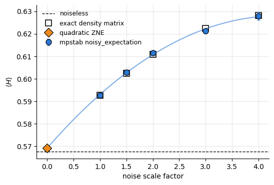

Noisy simulation with mpstab.noise¶
This tutorial shows how to simulate noisy circuits on the HSMPO surrogate:
describe the noise with a
NoiseModel, adding errors rule by rule as in qibo;compute noisy expectation values with
HSMPO.noisy_expectation;check them against an exact qibo density-matrix simulation;
add readout noise;
sweep the noise strength, as zero-noise extrapolation does;
run at sizes no density matrix can reach.
How it works. A Pauli fault, pulled through the Clifford part of the circuit, leaves the stabilizer tableau unchanged: it only flips the sign of the angle of some later magic rotations, and possibly the sign of the observable. A noisy expectation value is therefore a probability-weighted average of noiseless HSMPO expectation values over sign patterns. noisy_expectation sums the patterns with zero and one fault exactly and samples those with two or more, so the result comes with a
standard error from that last stratum only. Coherent errors are just extra rotations in the chain.
[1]:
import time
import matplotlib.pyplot as plt
import numpy as np
from qibo import gates
from mpstab import HSMPO
from mpstab.models.ansatze import ParametricKickedIsing
from mpstab.noise import (
CoherentError,
DepolarizingError,
NoiseModel,
PauliError,
ReadoutError,
)
np.set_printoptions(precision=4, suppress=True)
The circuit¶
We use a kicked Ising chain whose Clifford skeleton sits at the self-dual point (maximal entanglement growth); delta_h sets how far the transverse kicks are from Clifford, i.e. how much magic the circuit holds. The couplings are CNOT · RZ · CNOT, so the two-qubit gates are CNOTs. The observable is the nearest-neighbour \(ZZ\) energy.
[2]:
NQUBITS = 8
ansatz = ParametricKickedIsing(nqubits=NQUBITS, n_steps=3, delta_h=0.2)
circuit = ansatz.circuit
observable = {
"".join("Z" if q in (i, i + 1) else "I" for q in range(NQUBITS)): 1.0
for i in range(NQUBITS - 1)
}
hsmpo = HSMPO(ansatz)
ideal = hsmpo.expectation(observable)
print(f"{NQUBITS} qubits, {len(circuit.queue)} gates, {hsmpo.n_magic_gates} magic")
print(f"noiseless <H> = {ideal:+.6f}")
8 qubits, 111 gates, 24 magic
noiseless <H> = +0.567609
Building a noise model¶
NoiseModel.add(error, gate=None, qubits=None) puts error right after every gate of type gate (every gate if None), optionally only on some qubits. The available errors are:
error |
meaning |
|---|---|
|
stochastic Pauli error; single-qubit labels act on each qubit of the gate separately, labels as wide as the gate act jointly (correlated noise) |
|
depolarizing channel on all the gate’s qubits, qibo’s convention |
|
unitary error \(e^{-i\,\text{angle}\,P/2}\), e.g. a residual coupling or an over-rotation |
|
symmetric bit flip of each measured bit (added without a gate); |
General channels (AmplitudeDampingError, ThermalRelaxationError, KrausError), crosstalk on spectator qubits, idle noise and preparation errors are covered in the device-level noise tutorial.
add returns the model, so calls can be chained.
[3]:
noise = NoiseModel()
noise.add(PauliError({"X": 3e-4, "Y": 3e-4, "Z": 3e-4})) # every gate, every qubit
noise.add(DepolarizingError(2e-3), gates.CNOT) # two-qubit depolarizing on CNOTs
noise.add(PauliError({"ZZ": 1e-3}), gates.CNOT) # correlated dephasing on CNOTs
noise.add(CoherentError("ZZ", 0.02), gates.CNOT) # residual ZZ on CNOTs
noise.add(CoherentError("X", 0.01), gates.RX, qubits=[0, 1]) # over-rotation, edge qubits only
[3]:
NoiseModel(rules=[_Rule(kind='gate', error=PauliError(probs={'X': 0.0003, 'Y': 0.0003, 'Z': 0.0003}), gate=None, qubits=None, coupling=None), _Rule(kind='gate', error=DepolarizingError(lam=0.002), gate=(<class 'qibo.gates.gates.CNOT'>,), qubits=None, coupling=None), _Rule(kind='gate', error=PauliError(probs={'ZZ': 0.001}), gate=(<class 'qibo.gates.gates.CNOT'>,), qubits=None, coupling=None), _Rule(kind='gate', error=CoherentError(generator='ZZ', angle=0.02), gate=(<class 'qibo.gates.gates.CNOT'>,), qubits=None, coupling=None), _Rule(kind='gate', error=CoherentError(generator='X', angle=0.01), gate=(<class 'qibo.gates.gates.RX'>,), qubits=frozenset({0, 1}), coupling=None)])
The model is resolved on a circuit only when it is used. events shows what it inserts and where, which is handy to check that the rules do what you meant:
[4]:
events = noise.events(circuit)
print(len(events), "noise events")
for event in events[:4]:
print(event)
291 noise events
PauliChannel(after_gate=0, qubits=(0,), probs={'X': 0.0003, 'Y': 0.0003, 'Z': 0.0003})
PauliChannel(after_gate=1, qubits=(0,), probs={'X': 0.0003, 'Y': 0.0003, 'Z': 0.0003})
PauliChannel(after_gate=2, qubits=(1,), probs={'X': 0.0003, 'Y': 0.0003, 'Z': 0.0003})
PauliChannel(after_gate=3, qubits=(1,), probs={'X': 0.0003, 'Y': 0.0003, 'Z': 0.0003})
Noisy expectation values¶
HSMPO.noisy_expectation sits next to HSMPO.expectation: the ideal value is a float, the noisy one a NoisyExpectation with the value in mean and its standard error in stderr. n_samples sets how many fault configurations are sampled for the two-or-more-faults stratum, seed makes it reproducible.
[5]:
start = time.perf_counter()
result = hsmpo.noisy_expectation(observable, noise, n_samples=1000, seed=0)
elapsed = time.perf_counter() - start
print(f"ideal <H> = {ideal:+.6f}")
print(f"noisy <H> = {result.mean:+.6f} +- {result.stderr:.1e} ({elapsed:.2f} s)")
print(f"sign patterns evaluated: {result.n_patterns}")
print("Pr(0 faults), Pr(1 fault), Pr(>=2 faults):", np.round(result.stratum_weights, 4))
ideal <H> = +0.567609
noisy <H> = +0.592573 +- 1.2e-04 (3.48 s)
sign patterns evaluated: 890
Pr(0 faults), Pr(1 fault), Pr(>=2 faults): [0.7969 0.181 0.0221]
Checking against the exact density matrix¶
noise.apply(circuit) returns the same noisy circuit as a qibo density-matrix circuit (Pauli errors as PauliNoiseChannel, coherent ones as unitaries, general channels as KrausChannel), so on small systems an exact reference is one line away.
[6]:
from mpstab.hamiltonians import pauli_string_to_hamiltonian
def exact_expectation(noise, observable):
"""<observable> on the qibo density matrix of the noisy circuit."""
rho = noise.apply(circuit)().state()
return sum(
coefficient * pauli_string_to_hamiltonian(pauli).expectation_from_state(rho)
for pauli, coefficient in observable.items()
)
start = time.perf_counter()
exact = exact_expectation(noise, observable)
print(f"exact <H> = {exact:+.6f} ({time.perf_counter() - start:.2f} s)")
print(f"|mpstab - exact| / stderr = {abs(result.mean - exact) / result.stderr:.2f}")
[Qibo 0.3.6|INFO|2026-11-17 23:01:53]: Using numpy backend on /CPU:0
exact <H> = +0.592571 (1.68 s)
|mpstab - exact| / stderr = 0.02
Readout noise¶
ReadoutError(p) flips each measured bit with probability p. A Pauli expectation value is estimated from bits measured in the term’s eigenbasis, so every non-identity factor on a noisy qubit picks up a factor \(1-2p\): readout noise only rescales the observable’s coefficients. It acts on the measured bits rather than on the state, so it is not part of noise.apply(circuit), and readout_observable shows the rescaled observable directly. Errors on the same qubit compose.
[7]:
with_readout = NoiseModel(list(noise.rules))
with_readout.add(ReadoutError(0.01))
with_readout.add(ReadoutError(0.03), qubits=[0]) # a worse qubit
print("attenuation per qubit:", with_readout.readout_attenuation(NQUBITS))
constant, scaled_terms = with_readout.readout_observable(observable, NQUBITS)
print("first two rescaled terms:", dict(list(scaled_terms.items())[:2]))
result_ro = hsmpo.noisy_expectation(observable, with_readout, n_samples=1000, seed=0)
print(f"gate noise only <H> = {result.mean:+.6f}")
print(f"+ readout noise <H> = {result_ro.mean:+.6f}")
attenuation per qubit: [0.9212 0.98 0.98 0.98 0.98 0.98 0.98 0.98 ]
first two rescaled terms: {'ZZIIIIII': 0.9027759999999999, 'IZZIIIII': 0.9603999999999999}
gate noise only <H> = +0.592573
+ readout noise <H> = +0.565718
Sweeping the noise strength¶
noise.scaled(factor) multiplies every probability and coherent angle by factor. This is the knob behind noise-strength sweeps such as zero-noise extrapolation (ZNE): evaluate at amplified noise, then extrapolate back to zero. Here we also keep the exact density-matrix value at each strength to see how close a simple quadratic extrapolation gets to the noiseless value.
[8]:
factors = np.array([1.0, 1.5, 2.0, 3.0, 4.0])
values, errors, exacts = [], [], []
for factor in factors:
scaled = noise.scaled(factor)
res = hsmpo.noisy_expectation(observable, scaled, n_samples=1000, seed=0)
values.append(res.mean)
errors.append(res.stderr)
exacts.append(exact_expectation(scaled, observable))
values, errors, exacts = map(np.array, (values, errors, exacts))
fit = np.polyfit(factors, values, 2)
extrapolated = np.polyval(fit, 0.0)
print(f"ideal {ideal:+.5f}")
print(f"noisy (x1) {values[0]:+.5f}")
print(f"ZNE estimate {extrapolated:+.5f}")
ideal +0.56761
noisy (x1) +0.59257
ZNE estimate +0.56909
[9]:
fig, ax = plt.subplots(figsize=(6, 4))
grid = np.linspace(0, factors.max(), 100)
ax.axhline(ideal, color="#0b0b0b", lw=1, ls="--", label="noiseless")
ax.plot(factors, exacts, "s", color="#0b0b0b", ms=8, mfc="none", mew=1.2, label="exact density matrix")
ax.errorbar(factors, values, yerr=errors, fmt="o", color="#2a78d6", ms=8, mec="#0b0b0b",
mew=0.9, capsize=2, label="mpstab noisy_expectation")
ax.plot(grid, np.polyval(fit, grid), color="#2a78d6", lw=1.5, alpha=0.6)
ax.plot([0], [extrapolated], "D", color="#eb8a1c", ms=9, mec="#0b0b0b", mew=0.9, label="quadratic ZNE")
ax.set_xlabel("noise scale factor")
ax.set_ylabel(r"$\langle H \rangle$")
ax.spines[["top", "right"]].set_visible(False)
ax.grid(alpha=0.3)
ax.legend(frameon=False, fontsize=9)
plt.show()

Beyond density matrices¶
The cost of noisy_expectation is the number of sign patterns times the cost of a noiseless HSMPO evaluation, so it never touches a \(4^n\) object. The same noise model runs unchanged on larger chains, where the bond-dimension cap max_bond_dimension controls the accuracy of each pattern; a 100-qubit density matrix would need \(4^{100}\) entries.
Below we measure a local \(Z_iZ_{i+1}\) in the middle of the chain. Only the rotations and faults inside its light cone can affect it, and noisy_expectation drops all the others exactly. After three steps that light cone covers a fixed number of qubits, so the value, the number of sign patterns and the cost barely depend on \(n\): the value is the bulk value of an infinite chain. A global observable such as the full energy instead has a light cone growing with the chain, and its cost
grows with \(n\) (about 30 s at \(n=24\) for the full \(ZZ\) energy of this circuit).
[10]:
for n in (16, 40, 100):
big = ParametricKickedIsing(nqubits=n, n_steps=3, delta_h=0.2)
middle = n // 2
local = "".join("Z" if q in (middle, middle + 1) else "I" for q in range(n))
surrogate = HSMPO(big, max_bond_dimension=32, progress=False)
start = time.perf_counter()
res = surrogate.noisy_expectation(local, noise, n_samples=500, seed=0)
print(f"n={n:3d}: ideal {surrogate.expectation(local):+.4f}, "
f"noisy {res.mean:+.4f} +- {res.stderr:.1e}, "
f"{res.n_patterns} patterns, {time.perf_counter() - start:.1f} s")
n= 16: ideal +0.1123, noisy +0.1009 +- 1.8e-05, 384 patterns, 0.8 s
n= 40: ideal +0.1123, noisy +0.1009 +- 1.8e-05, 384 patterns, 1.5 s
n=100: ideal +0.1123, noisy +0.1009 +- 1.8e-05, 384 patterns, 3.7 s
Summary¶
noise = NoiseModel()
noise.add(DepolarizingError(1e-3)) # after every gate
noise.add(PauliError({"ZZ": 5e-4}), gates.CNOT) # correlated, on CNOTs
noise.add(CoherentError("ZZ", 0.02), gates.CNOT) # residual coupling
noise.add(ReadoutError(0.01)) # readout bit flips
ideal = hsmpo.expectation(obs) # float
noisy = hsmpo.noisy_expectation(obs, noise) # .mean, .stderr
exact = noise.apply(circuit) # qibo density-matrix circuit
twice = noise.scaled(2.0) # noise-strength sweeps
Relaxation and other non-Pauli channels, crosstalk, idle noise and preparation errors: see the device-level noise tutorial.